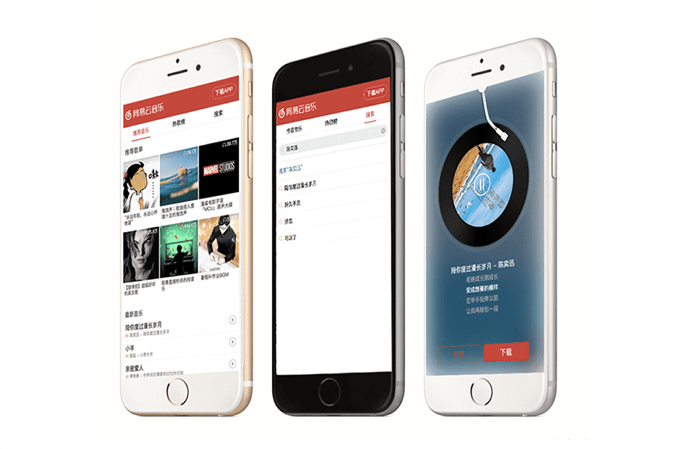
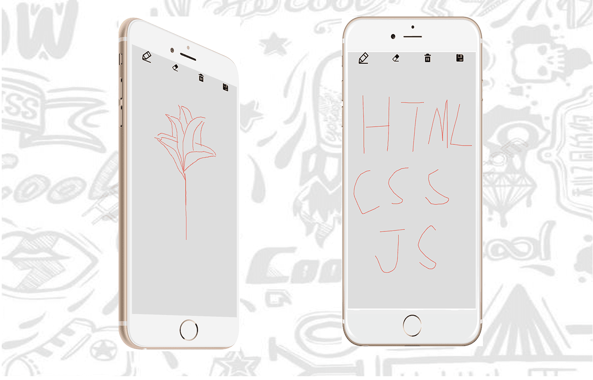
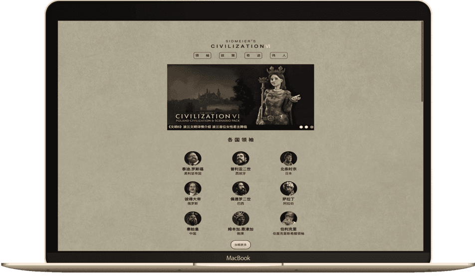
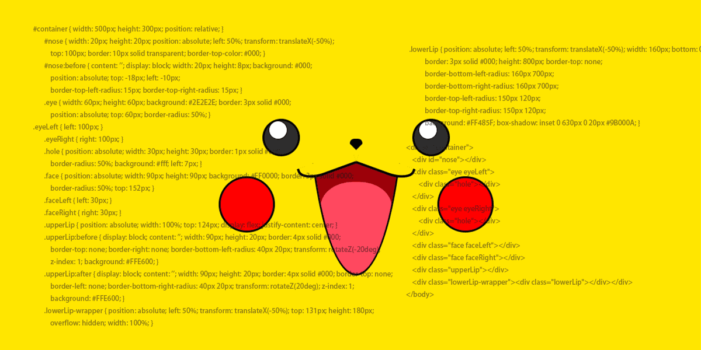

个人介绍
意向职位：前端开发
年龄：24岁
手机：18171019629
城市：湖北武汉
教育经历：2012-2015 武汉科技大学（大专）
热爱生活，性格乐观，每天都充满正能量
热爱技术，对于不熟悉的方法充满好奇
热爱学习，努力提升自我，完善自我
看电影，听音乐，健身，持续健身
项目介绍
-
1、网易云音乐移动端(Web App)
移动端网页版网易云音乐，实现按曲名或歌手搜索、歌曲播放和暂停、歌词滚动等功能
以LeanCloud 为数据库，通过函数节流处理搜索框请求重复发送问题
分支使用webpack处理文件
技术栈：原生JS、jQuery、leanCloud、webpack、requireJS
(预览请使用移动端模式)
-
2、ToDoList(react.js)

基于react.js开发的一个ToDoList的应用，实现用户注册、登录，记录完成/未完成事项清单
以LeanCloud 为数据库，记录用户username、password、email，以实现找回密码功能
技术栈：leanCloud、webpack、react.js
-
3、Canvas画板(Web App)
移动端网页版绘图工具
能够进行清除、删除、保存等操作
技术栈：原生JS、Canvas
(预览请使用移动端模式)
-
4、响应式布局+自动加载
利用媒体查询在不同尺寸的屏幕上显示不同的布局
原生JS实现懒加载、自动加载下一页
技术栈：媒体查询、纯CSS、Flex布局、原生JS
-
5、纯CSS绘制的皮卡丘
纯CSS绘制一个皮卡丘
技术栈：Flex布局、CSS 3 动画

技能总结
-
1、静态页面制作
对Web标准的深刻理解，已经熟练使用Flex 布局、CSS 3动画
像素级还原设计稿，并以响应式适应各种尺寸的屏幕
-
2、移动端页面制作
采用动态REM(flexible.js)方案适配各尺寸手机屏幕
熟悉手机端页面开发，用浏览器模拟不同型号、不同尺寸 手机端的页面调试
-
3、原生JavaScript
理解基本概念，如原型链、闭包、作用域链、Promise异步、this 等
能够使用原生JS将代码按功能封装成 DOM 库
熟练掌握jQuery库，了解Vue.js，react.js，并对MVC，MVVM模块化编程模式有一定了解
能够使用gulp、 webpack、 RequireJS 打包代码
-
4、配合后端开发
了解HTTP 协议、 AJAX 技术
了解两种跨域策略：CORS 和 JSONP
-
5、热爱学习
热爱前端，对待新鲜事物、技术、知识有着强烈的好奇心，并有强烈的求职欲望。
乐于学习新的技术(不仅限于前端)
可以适应长时间单纯而不枯燥的学习
善于分享与交流，并有着良好的学习习惯。
接下来的阶段里会持续强化对前端知识、基础算法、后端知识的补足，去理解一个产品的生命周期。